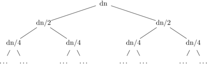

Chapter 16: Algorithms
This chapter covers how to analyze the running time of algorithms.
16.1 Introduction
The techniques we've developed earlier in this course can be applied to analyze how much time a computer algorithm requires, as a function of the size of its input(s). We will see a range of simple algorithms illustrating a variety of running times. Three methods will be used to analyze the running times: nested loops, resource consumption, and recursive definitions.
We will figure out only the big-O running time for each algorithm, i.e. ignoring multiplicative constants and behavior on small inputs. This will allow us to examine the overall design of the algorithms without excessive complexity. Being able to cut corners so as to get a quick overview is a critical skill when you encounter more complex algorithms in later computer science classes.
16.2 Basic data structures
Many simple algorithms need to store a sequence of objects $a_1,\ldots, a_n$. In pseudocode, the starting index for a sequence is sometimes 0 and sometimes 1, and you often need to examine the last subscript to find out the length. Sequences can be stored using either an array or a linked list. The choice sometimes affects the algorithm analysis, because these two implementation methods have slightly different features.
An array provides constant-time ($O(1)$) access to any element. So you can quickly access elements in any order you choose and the access time does not depend on the length of the array. However, the length of an array is fixed when the array is built. Changing the array length takes $O(n)$ time, where $n$ is the length of the array. This is often called linear time. Adding or deleting objects in the middle of the array requires pushing other objects sideways, which typically also takes linear time. Two-dimensional arrays are similar, except that you need to supply two subscripts e.g. $a_{x,y}$.
In a linked list, each object points to the next object in the list. An algorithm has direct access only to the element at the head of the list. Other elements can be accessed only by walking element-by-element from the head. However, it's comparatively easy to add and remove elements. (If you know some data structures, we're assuming a singly-linked list.)
Specifically, a linked list starts with its head and ends with its tail. For example, suppose our list is $L=(1, 7,3,4,7, 19)$. Then
- The function first returns the first element of the list. E.g. first(L) returns 1.
- The function rest returns the list missing its first element. E.g. rest(L) returns $(7,3,4,7, 19)$.
- The function cons adds a new element onto the head of the list, returning the new (longer) list. So cons(35,L) will return $(35,1, 7,3,4,7, 19)$.
It takes constant time to add, remove, or read/write the value at the head of the list. The same applies to locations that are constant number of places from the head, e.g. changing the value at the the third position in the list. Adding, removing or accessing the values at other positions takes linear time. With careful bookkeeping, it is also possible to read/write or add values at the tail of a list in constant time. (See a data structures textbook for the gory details.) However, accessing slightly earlier values in the list or removing values from the tail takes $O(n)$ time.
For some algorithms, the big-O performance does not depend on whether arrays or linked lists are used. This happens when the number of objects is fixed and the objects are accessed in sequential order. However, remember that a big-O analysis ignores multiplicative constants. All other things being equal, array-based implementations tend to have smaller constants and therefore run faster.
16.3 Nested loops
Algorithms based on nested loops are the easiest to analyze. Suppose that we have a set of 2D points and we would like to find the pair that are closest together. Our code might look as in Figure 1, assuming that the function dist computes the distance between two 2D points.
To analyze this code in big-O terms, first notice that the start-up code in lines 1-4 and the ending code in line 12 takes the same amount of time regardless of the input size $n$. So we'll say that it takes ``constant time'' or $O(1)$ time. The block of code inside both loops (lines 7-11) takes a constant time to execute once. So the big-O running time of this algorithm is entirely determined by how many times the loops run.
The outer loop runs $n$ times. The inner loop runs $n$ times during
each iteration of the outer loop. So the block of code inside both
loops executes $O(n^2)$ times.
01 closestpair(p1, ..., pn)$ : array of 2D points)
02 best1 = p1
03 best2 = p2
04 bestdist = dist(p1,p2)
05 for i = 1 to n
06 for j = 1 to n
07 newdist = dist(p1,p2)
08 if (i not = j and newdist < bestdist)
09 best1 = pi
10 best2 = pj
11 bestdist = newdist
12 return (best1, best2)
This code examines each pair of 2D points twice, once in each order. We could avoid this extra work by having the inner loop ($j$) run only from $i+1$ to $n$. In this case, the code inside both loops will execute $\sum_{i = 1}^ n (n-i)$ times. This is equal to $\sum_{i = 0}^ {n-1} i = \frac{n(n-1)}{2}$. This is still $O(n^2)$: our optimization improved the constants but not the big-O running time. Improving the big-O running time---$O(n\log n)$ is possible--requires restructuring the algorithm and involves some geometrical detail beyond the scope of this chapter.
16.4 A connected component algorithm
The function in Figure 2 finds all the
nodes in a graph that are in the same connected component
as the input node $s$. To do this, we
start from $s$ and explore outwards by following the edges of the
graph. When we visit a node, we place a marker on it so that we
can avoid examining it again (thereby risking an infinite loop).
The temporary list $Q$ contains nodes that we have reached,
but whose neighbors have not yet been explored.
01 component(G: a graph; s: node in G)
02 Unmark all nodes of G.
03 RV = emptylist
04 Q = emptylist
05 Mark node s and add it to Q
06 while (Q is not empty)
07 p = first(Q)
08 Q = rest(Q)
09 add p to RV
10 for every node n that is a neighbor of p in G
11 if n is not marked
12 mark n
13 add n to the tail of Q
14 return RV
At line 13, we could have chosen to add n to the tail of Q. This algorithm will work fine with either variation. This choice changes the order in which nodes are explored, which is important for some other algorithms.
It's not obvious how many times the while loop will run, but we can put an upper bound on this. Suppose that $G$ has $n$ nodes and $m$ edges. The marking ensures that no node is put onto the list $M$ more than once. So the code in lines 7-9 runs no more than $n$ times, i.e. this part of the function takes $O(n)$ time. Line 02 looks innocent, but notice that it must check all nodes to make sure they are unmarked. This also takes $O(n)$ time.
Now consider the code in lines 11-13. This code runs once per edge traversed. During the whole run of the code, a graph edge might get traced twice, once in each direction. There are $m$ edges in the graph. So lines 11-13 cannot run more than $2m$ times. Therefore, this part of the code takes $O(m)$ time.
In total, this algorithm needs $O(n + m)$ time. This is an interesting case because neither of the two terms $n$ or $m$ dominates the other. It is true that the number of edges $m$ is no $O(n^2)$ and thus the connected component algorithm is $O(n^2)$. However, in most applications, relatively few of these potential edges are actually present. So the $O(n+m)$ bound is more helpful.
Notice that there is a wide variety of graphs with $n$ nodes and $m$ edges. Our analysis was based on the kind of graph that wold causes the algorithm to run for the longest time, i.e. a graph in which the algorithm reaches every node and traverses every edge, reaching $t$ last. This is called a worst-case analysis. On some input graphs, our code might run much more quickly, e.g. if we encounter $t$ early in the search or if much of the graph is not connected to $s$. Unless the author explicitly indicates otherwise, big-O algorithm analyses are normally understood to be worst-case.
16.5 Binary search
We will now look at a strategy for algorithm design called
``divide and conquer,'' in which a larger problem is solved
by dividing it into several (usually two) smaller problems.
For example, the code in Figure 3 uses
a technique called binary search to calculate the square
root of its input. For simplicity, we'll assume that
the input $n$ is quite large, so that we only need the
answer to the nearest integer.
01 squareroot(n: positive integer)
02 p = squarerootrec(n, 1, n)
03 if (n - p^2 <= (p+1)^2 - n)
05 return p
05 else return p+1
11 squarerootrec(n, bottom, top: positive integers)
12 if (bottom = top) return bottom
13 middle = floor((bottom+top)/2)
14 if (middle}^2 == n)
15 return middle
16 else if ({middle}^2 <= n)
17 return squarerootrec(n,middle,top)
18 else
19 return squarerootrec(n,bottom,middle)
This code operates by defining a range of integers in which the answer must live, initially between 1 and $n$. Each recursive call tests whether the midpoint of the range is higher or lower than the desired answer, and selects the appropriate half of the range for further exploration. The helper function squarerootrec returns when it has found $\lfloor\sqrt(n) \rfloor$. The function then checks whether this value, or the next higher integer, is the better approximation.
This isn't the fastest way to find a square root. (A standard faster approach is Newton's method.) But this simple method generalizes well to situations in which we have only a weak model of the function we are trying to optimize. This method requires only that you can test whether a candidate value is too low or too high. Suppose, for example, that you are tuning a guitar string. Many amateur players can tell if the current tuning is too low or too high, but have a poor model of how far to turn the tuning knob. Binary search would be a good strategy for optimizing the tuning.
To analyze how long binary search takes, first notice that the start-up and clean-up work in the main squareroot function takes only constant time. So we can basically ignore its contribution. The function squarerootrec makes one recursive call to itself and otherwise does a constant amount of work. The base case requires only a constant amount of work. So if the running time of squarerootrec is $T(n)$, we can write the following recursive definition for $T(n)$, where $c$ and $d$ are constants.
- $T(1) = c$
- $T(n) = T(n/2) + d$
If we unroll this definition $k$ times, we get $T(n) = T(\frac{n}{2^k}) + kd$. Assuming that $n$ is a power of 2, we hit the base case when $k = \log n$. So $T(n) = c + d \log n$, which is $O(\log n)$.
16.6 Merging two lists
Figure 4 shows another simple algorithm, which
merges two sorted lists.
01 merge(L1,L2: sorted lists of real numbers)
02 if (L1 is empty)
03 return L2
04 else if (L2 is empty)
05 return L1
06 else if (head(L1) $<=$ head(L2))
07 return cons(head(L1),merge(rest(L1),L2))
08 else
09 return cons(head(L2),merge(L1,rest(L2)))
Because the two input lists are sorted, we can find the first (aka smallest) element of the output list by comparing the first elements in the two input lists (line 6). We then use a recursive call to merge the rest of the two lists (line 7 or 9).
For merge, a good measure of the size of the input is the sum of the lengths of the two input arrays. Let's call this $n$. We can write the following recursive definition for the running time of merge:
- $T(1) = c$
- $T(n) = T(n-1) + d$
Unrolling this recursive definition gives us the closed form $nd+c$, which is $O(n)$.
16.7 Mergesort
Mergesort takes an input linked list of numbers and returns a
new linked list containing the sorted numbers.
(Some
other sorting algorithms, notably the quicksort algorithm used
in many libraries, rearrange the
values within a single array and
don't return anything.)
Mergesort divides its big input list (length $n$) into two smaller
lists of length $n/2$. Lists are divided up repeatedly until we have
a large number of very short lists, of length 1 or 2 (depending on the
preferences of the code writer). A length-1 list is necessarily
sorted. A length 2 list can be sorted in constant time.
Then, we take all these small sorted lists and merge them together
in pairs, gradually building up longer and longer sorted lists until
we have one sorted list containing all of our original input numbers.
Figure 5 shows the resulting pseudocode.
01 mergesort(L = a1, a2, ..., an: list of real numbers)
02 if (n = 1) then return L
03 else
04 m = floor(n/2)
05 L1 = (a1, a2, ..., a_m)
06 L2 = (a(m+1), a(m+2), ... ,a_n)
07 return merge(mergesort(L1),mergesort(L2))
On an input of length $n$, mergesort makes two recursive calls to itself. It also does $O(n)$ work dividing the list in half, because it must walk, element by element, from the head of the list down to the middle position. And it does $O(n)$ work merging the two results. So if the running time of mergesort is $T(n)$, we can write the following recursive definition for $T(n)$, where $c$ and $d$ are constants.
- $T(1) = c$
- $T(n) = 2T(n/2) + dn$
This recursive definition has the following recursion tree:

The tree has $O(\log n)$ non-leaf levels and the work at each level sums up to $dn$. So the work from the non-leaf nodes sums up to $O(n \log n)$. In addition, there are $n$ leaf nodes (aka base cases for the recursive function), each of which involves $c$ work. So the total running time is $O(n \log n) + cn$ which is just $O(n \log n)$.
16.8 Tower of Hanoi
The Tower of Hanoi puzzle was invented by the French mathematician Edouard Lucas in 1883. It consists of three pegs and a set of $k$ disks of graduated size that fit on them. The disks start out in order on one peg. You are allowed to move only a single disk at a time. The goal is to rebuild the ordered tower on another peg without ever placing a disk on top of a smaller disk.
The best way to understand the solution is recursively. Suppose
that we know how to move $k$ disks from one peg to another peg,
using a third temporary-storage peg. To move $k+1$ disks from
peg $A$ to peg $B$ using a third peg $C$,
we first move the top $k$ disks from $A$ to
$C$ using $B$ as temporary storage.
Then we move the biggest disk from
$A$ to $B$. Then we move the other $k$ disks from $C$ to $B$,
using $A$ as temporary storage.
So our recursive solver would have pseudocode as in
Figure 7.
01 hanoi(A, B, C: pegs, d1, d2, ..., d_n: disks)
02 if (n=1) move d1 from A to B
03 else
04 hanoi(A, C, B, d1, d2, ..., d(n-1))
05 move dn from A to B.
06 hanoi(C, B, A, d1, d2, ..., d(n-1))
The function hanoi breaks up a problem of size $n$ into two problems of size $n-1$. Alert! Warning bells! This can't be good: the sub-problems aren't much smaller than the original problem!
Anyway, hanoi breaks up a problem of size $n$ into two problems of size $n-1$. Other than the two recursive calls, it does only a constant amount of work. So the running time $T(n)$ for the function hanoi would be given by the recursive definition (where $c$ and $d$ are constants):
- $T(1) = c$
- $T(n) = 2T(n -1) + d$
If we unroll this definition, we get \begin{eqnarray*} T(n) &=& 2T(n -1) + d \\ &=& 2\cdot 2(T(n -2) +d) + d \\ &=& 2\cdot 2(2(T(n -3) +d) + d) + d \\ &=& 2^3T(n-3) + 2^2d + 2d + d \\ &=& 2^kT(n-k) + d\sum_{i=0}^{k-1} 2^i \\ \end{eqnarray*}
We'll hit the base case when $k = n-1$. So \begin{eqnarray*} T(n) &=& 2^kT(n-k) + d\sum_{i=0}^{k-1} 2^i \\ &=& 2^{n-1}c + d\sum_{i=0}^{n-2} 2^i \\ &=& 2^{n-1}c + d(2^{n-1} -1) \\ &=& 2^{n-1}c + 2^{n-1}d -d \\ &=& O(2^n) \end{eqnarray*}
16.9 Multiplying big integers
Suppose we want to multiply two integers. Back in the Bad Old Days of slow computers, we would need to multiply moderate-sized integers digit-by-digit. These days, we typically have a CPU that can multiply two moderate-sized numbers (e.g. 16-bit, 32-bit) as a single operation. But some applications (e.g. in cryptography) involve multiplying very, very large integers. Each very long integer must then be broken up into a sequence of 16-bit or 32-bit integers.
Let's suppose that we are breaking up each integer into individual digits, and that we're working in base 2. The recursive multiplication algorithm divides each $n$-digit input number into two $n/2$-digit halves. Specifically, suppose that our input numbers are $x$ and $y$ and they each have $2m$ digits. We can then divide them up as $$x = x_1 2^m + x_0$$ $$y = y_1 2^m + y_0$$
If we multiply $x$ by $y$ in the obvious way, we get $$xy = A2^{2m} + B2^m + C$$
where $A = x_1y_1$, $B = x_0y_1 + x_1y_0$, and $C = x_0y_0$. Set up this way, computing $xy$ requires multiplying four numbers with half the number of digits.
In this computation, the operations other than multiplication are fast, i.e. $O(m) = O(n)$. Adding two numbers can be done in one sweep through the digits, right to left. Multiplying by $2^m$ is also fast, because it just requires left-shifting the bits in the numbers. Or, if you aren't very familiar with binary yet, notice that multiplying by $10^m$ just requires adding $m$ zeros to the end of the number. Left-shifting in binary is similar.
So, the running time of this naive method has the recursive definition:
- $T(1) = c$
- $T(n) = 4T(n/2) + dn$
The closed form for $T(n)$ is $O(n^2)$ (e.g. use unrolling).
The trick to speeding up this algorithm is to rewrite our algebra for computing $B$ as follows $$B = (x_1 + x_0)(y_1 + y_0) - A - C$$
This means we can compute $B$ with only one multiplication rather that two. So, if we use this formula for $B$, the running time of multiplication has the recursive definition
- $P(1) = c$
- $P(n) = 3P(n/2) + O(n)$
It's not obvious that we've gained anything substantial, but we have. If we build a recursion tree for $P$, we discover that the $k$th level of the tree contains $3^k$ problems, each involving $n\frac{1}{2^k}$ work. So each non-leaf level requires $n(\frac{3}{2})^k$ work. The sum of the non-leaf work is dominated by the bottom non-leaf level.
The tree height is $\log_2(n)$, so the bottom non-leaf level is at $\log_2(n) - 1$. This level requires $n(\frac{3}{2})^{\log_2 n}$ work. If you mess with this expression a bit, using facts about logarithms, you find that it's $O(n^{\log_2 3})$ which is approximately $O(n^{1.585})$.
The number of leaves is $3^{log_2 n}$ and constant work is done at each leaf. Using log identities, we can show that this expression is also $O(n^{\log_2 3})$.
So this trick, due to Anatolii Karatsuba, has improved our algorithm's speed from $O(n^2)$ to $O(n^{1.585})$ with essentially no change in the constants. If $n=2^{10} = 1024$, then the naive algorithm requires $(2^{10})^2 = 1,048,576$ multiplications, whereas Katatsuba's method requires $3^{10} = 59,049$ multiplications. So this is a noticable improvement and the difference will widen as $n$ increases.
There are actually other integer multiplication algorithms with even faster running times, e.g. Schönhage-Strassen's method takes $O(n\log n \log \log n)$ time. But these methods are more involved.